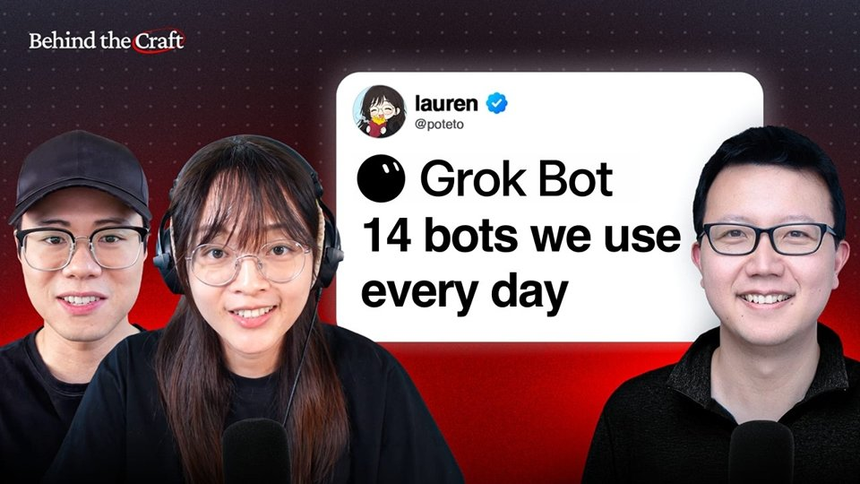

2026 · Peter Yang · Behind the Craft
We Built Grok Bot. Here Are Our 14 Best Bots | Peng Zheng & Lauren Tan

Viewing notes
Designer Peng Zheng and engineer Lauren Tan show Peter Yang the bots they work with. Follow one engineering change through Tan’s examples: who can test what the user will see before the merge? Then compare that job with Dr. Eggbot, which helps design and audit other bots. The distinction matters when deciding whether a team needs another worker or a better way of defining a worker’s job.